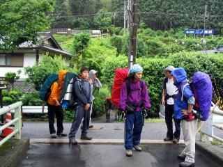
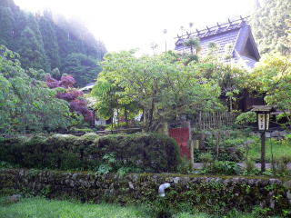
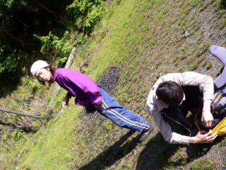
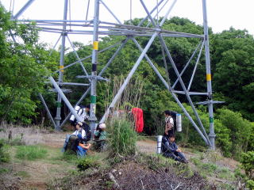

日付 '08 05/31-06/01
参加者 10名
行程 二ノ瀬～夜泣峠～貴船山～滝谷峠～魚谷山（魚谷林道泊）
～芹生～旧花脊峠～天狗杉～花脊峠～アンテナ～百井峠～天ヶ岳～寂光院道～大原
撮影機器 PowerShot A70
LUMIX DMC-FX7
雨なのでテンションは低めです。午前10時40分，フレスコで準備を整えて修学院ホームに到着。

11時10分，二ノ瀬に到着。富士神社で2パーティに分かれる。
20分遅れで出発した後発隊は11時50分，夜泣峠に到着。13時，二ノ瀬ユリ終点。
30分後，貴船山到着。優雅なランチタイム。14時25分，滝谷峠。
30分後，林道終点で現在地チェック。無線を持っていない上回生２人が行方不明に。特に心配はしない。

柳谷峠への上り（直谷）。”レリーフ”の付近。右側は冬のほぼ同じ場所。
16時，魚谷山。行方不明者は柳谷峠を突進したらしい。ヒルチェック。やられる。

魚谷林道。ママチャリなら高速スピン不可避。16時半，テン場に到着。行方不明者は既に張って待っていた。
夕げの支度中，林道を走ってきたステーションワゴンに「ここの方ですか?」と道を聞かれる。そんなハズありません。

翌朝5時，割ときちんと起床。準備体操の後，出発。

意地でも川の中には入らない。しかし無線機は川の中に。

7時10分，芹生の里に到着。

旧花背峠と雲取山の分岐でで約1時間たばこ休憩。8時20分出発。
約30分後，旧花背峠に到着。府大のワンゲルと出会う。
15分後，天狗杉に到着。ポーズを決めるおじさん。放って行かれる。
更に15分後，花脊峠に降下。勢い余って，危うく山の家に入所しそうになる。
おじさん，目がイっている。10分後，大見尾根分岐に到着。アンテナのほうにすすむ。
アンテナの根元に到着。NTTの鞍馬無線中継所で，今は警察庁の持ち物らしい。

左，国際会館がかすかに見える。 右，進む予定の天ヶ岳方面。
広葉樹をかき分け，地形を確認しつつ進む。
正午，国道とは思えない百井峠に落下。アブの多いランチタイム。バイクの兄ちゃんに変な目で見られる。

500kVの電磁波でパワーを回復した後，13時，天ヶ岳に到着。登山客の方に撮っていただきました。
あとは寂光院道をひたすら下るだけ。焼杉山はまたの機会に…
 活動記録に戻る 活動記録に戻る
|
|